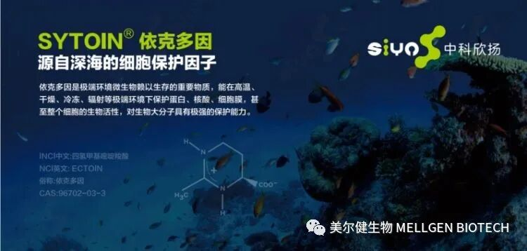
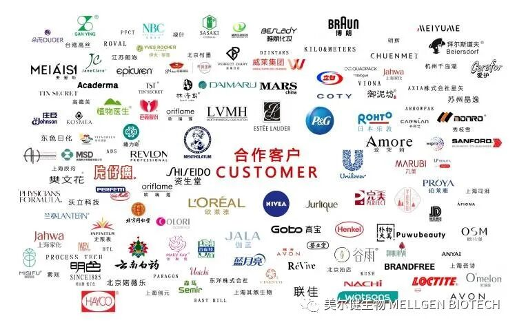
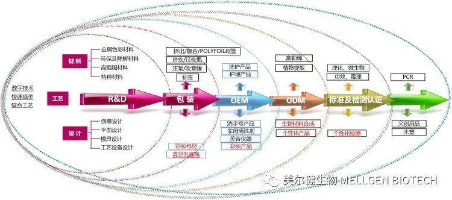
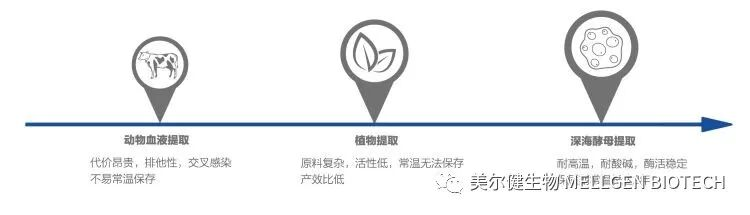
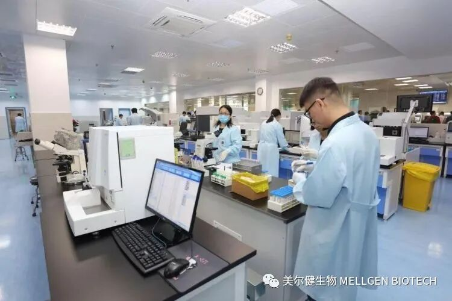
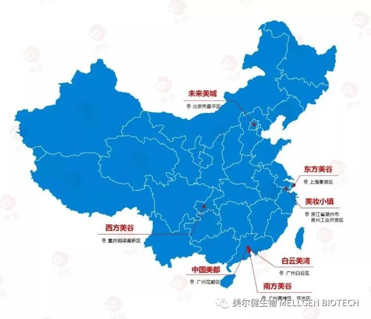

一款名为“依克多因”的原材料，让深圳中科欣扬生物科技有限公司被国际知名化妆品原材料商看中，目前双方已进入最后的合作阶段。
“我们研发的这款材料，通过工艺和技术上的改进，成本降低了一半。”深圳中科欣扬生物董事长董亮昨日告诉深圳商报记者，该原料将广泛应用于医疗、医美和护肤品板块（贝泰妮，珀莱雅，百雀羚等）。
中科欣扬仅仅是深圳企业参与化妆品原材料进口替代的企业之一。深圳商报记者在走访中了解到，依托深圳在合成生物、新材料等方面的研发优势，越来越多的深企在化妆品原材料合成运用和相关技术上具有了“话语权”，为破解国产化妆品“卡脖子”问题提供了深圳样本。

化妆品“卡脖子”问题严重
功效原料多数“依赖”进口
“国产化妆品面临的‘卡脖子’困境集中在原料研发、工艺创新和检测评价技术。这是制约国产化妆品竞争力提升的三大难题。”深圳市新材料行业协会创会会长、深圳市通产丽星科技集团董事长陈寿接受深圳商报记者采访时表示。
通产丽星为深圳老牌国企，早年从事化妆品塑料包装业务，后大力发展化妆品新材料和化妆品业务。宝洁、资生堂、欧莱雅、联合利华、雅思兰黛、妮维雅、玫琳凯、科蒂、曼秀雷敦、安利等国际知名品牌均为通产丽星的客户。

陈寿告诉记者，国际上允许使用的原料多达2万多种，但中国化妆品原料名录只有8000多种。“目前，国内企业功效原料绝大多数‘依赖’进口。”
深圳资深多肽研究专家丁文峰博士在接受深圳商报记者采访时一针见血：“化妆品原料生产企业缺乏具有自主知识产权的原料，中国化妆品行业每年必须从国外进口相当数量的原料。因此，国内原料生产企业受到国际化妆品原料厂商的影响和威胁很大。”
关键检测与评价技术，也是制约国产化妆品企业竞争力的重要因素。丁文峰向记者介绍，为了验证原料的安全性、功效性与稳定性，需要配备有精密的理化分析仪器、体内和体外功效测试仪器，同时还应具有科学健全的检测方法和专业的操作分析人员。“但就国内目前整体情况来看，配备有健全检测条件的企业少之又少，特别是许多中、小型企业，往往只能进行简单的分析检测试验。”
深圳企业“各显神通”
国产替代“风生水起”
深圳通产丽星的产业发展之路，可谓传统企业力图转型、突破化妆品“卡脖子”难题的典型。
“因为在原料和工艺等方面受制于国外厂商和品牌，为了扭转这种被动局面，我们开始大力发展原材料研发、提升工艺技术，并加强检测评价技术的创新与突破。”陈寿说。
记者在采访中获悉，通产丽星依托国家博士后工作站、国家863计划材料表面工程技术研发中心、国家认定企业技术中心、国家专精特新中小企业服务示范平台以及各类省市级创新载体，目前已获国家发明专利173项。在化妆品纳米材料、化妆品的研发、化妆品理化和功效检测等方面在国内处于领先地位。
从成立之初的外包装服务，到产品设计、原材料及工艺设备研发，再到第三方检测，拥有完整产业链的通产丽星化被动为主动，构建了垂直一体化的化妆品产业服务特色。

与通产丽星注重全产业链不同，深圳多家新兴企业，则专注于原材料的研发，在化妆品原材料国产替代中展现研发实力。
中科欣扬研发的材料中，除了依克多因，超稳定SOD和麦角硫因也因为工艺和技术上的改进备受头部化妆品企业青睐。中科欣扬董事长董亮介绍，超稳定SOD在生产、运输和使用过程中，能保持很好的活性，珀莱雅、贝泰妮一直与公司保持良好的合作关系。“麦角硫因，最先由雅诗兰黛开发，卖得很贵。我们研发出来后，已成为很好的进口替代原料，未来还可以做新食品的原料。”

丁文峰博士创立的深圳维琪医药，以药物多肽研发的技术开发了一系列美容多肽活性原料和产品，为国内外医疗美容市场提供了全面的多肽解决方案。公司自主研发的创新性原料获得了国际化妆品原料委员会审批通过的INCI名称，成为国内第一家获得活性多肽原料INCI命名的企业。
深圳市孔雀人才、哈尔滨工业大学（深圳）教授张嘉恒创建的萱嘉生物研发的产品品质媲美进口，性价比高。如α-熊果苷、维C葡糖苷、甘油葡糖苷类产品，以及百余种超分子溶剂促渗美容肽类产品。多款定制开发的原料备受华熙生物、丸美生物、青岛金王、南华生物、彭氏实业等企业和usmile、溪木源等新锐品牌的欢迎。
“近年来，我们聚焦海洋胶原蛋白的开发利用，从海蜇属水母中提取了天然一型胶原蛋白，比哺乳动物胶原蛋白具有更多的优势。”美尔健（深圳）生物透皮肽技术专家阮仁全博士向深圳商报记者介绍，该物质易于提取，水溶性好，安全性高，且海洋中资源存量充足，有望成为哺乳动物胶原替代。并在化妆品原料，医疗器械敷料和医疗填充物等领域得到广泛应用。
阮仁全介绍，生物透皮技术在化妆品领域具有巨大的应用潜力，其公司已与科丝美诗、诺斯贝尔等头部OEM/ODM化妆品企业建立合作，并服务珀莱雅、华熙生物、三草两木等客户和品牌。
源头创新优势明显
助力产业“弯道超车”
6月29日，国家药监局官网公布武汉中科光谷绿色生物技术有限公司的N-乙酰神经氨酸和苏州维美生物科技有限公司的月桂酰丙氨酸两个国产化妆品新原料备案信息。这是《化妆品监督管理条例》实施后乃至化妆品监管历史上首次完成化妆品新原料备案。
“这是化妆品监管历史上具有里程碑意义的事件。加速化妆品新原料上市必将为化妆品行业创新注入源头活水。”国家药监局化妆品监督管理司司长李金菊说。
“这无疑给深圳众多的创新企业注入了一剂‘助推剂’。”陈寿说，国家政策的助推，将进一步凸显深圳在原材料研发方面的优势。

“深圳在化妆品原料技术领域的优势还体现在人才和地域优势。”阮仁全表示，深圳优越的人才政策，吸引海内外各类高层次专业人才。他本人就是从中国科技大学毕业后，将透皮肽技术带到深圳进行产业化的。此外，深圳鼓励高端人才创业，细胞治疗，基因工程，海洋生物医药等高端生物技术的研究与产业化，为化妆品原料的源头创新提供了基础。
至于地域优势，阮仁全尤其强调深圳在全球海洋中心城市建设中的核心竞争力。深圳利用大湾区的产业合作平台，在多个领域展开先行先试，海洋生物医药产业发展迅猛。“海洋是天然化妆品原料的巨大宝库，海洋生物来源的各种化合物显示出各种美容活性，如抗氧化、抗炎、抗过敏、抗衰老和抗皱作用。相当多的藻类可用于保湿或抗衰老产品。在局部抗皱和系统抗衰领域，海洋来源的胶原蛋白是不容忽视的重要研究方向。”
“依托深圳在合成生物、新材料等方面的研发优势，深圳化妆品产业或可实现‘弯道超车’。”陈寿认为，虽然深圳化妆品产业目前存在产业地位较低、产业链较低端，企业布局分散较等问题，但在化妆品原材料的“国产替代”、解决“卡脖子”问题等方面优势明显。若能发挥社会主义先行示范区改革优势，高起点探讨化妆品材料及产品准入改革，将开拓深圳化妆品产业新格局，实现产业多元化发展目标。
记者手记：
下一站，深圳美丽谷？
读创/深圳商报记者 刘琼
记者关注这一话题，并展开采访调研工作时，正值北京昌平区政府宣布，打造千亿级美妆产业高地“北京未来美城”。
据相关数据显示，2015年至今，共有6大化妆品产业集群已初具规模或正在规划和建设中。东部有上海奉贤区倾力打造的“东方美谷”，浙江湖州的“美妆小镇”；南部有全国化妆品生产重地广州的“白云美湾”、“中国美都”和“南方美谷”，西部有位于重庆市铜梁高新区的“西部美谷”。

相比目前轰轰烈烈“上马”的化妆品产业集群，深圳的化妆品产业着实“暗淡”。2020年，深圳化妆品生产产值约 35 亿元,产值规模仅占全国的 0.8%，现有化妆品生产企业 96 家，位列全省第四，落后广州、中山等城市。
不过，2020 年深圳市化妆品营销规模却很大，华强北、茂业百货、万象城等销售超百亿规模，怡亚通分销化妆品达到 68 亿元。深圳化妆品在全国进口化妆品分销市场和国内消费市场的新优势正在快速形成。截止 2020 年，我国化妆品生产企业共 5300 余家，主营收入达到 4777 亿元，市场零售额达到万亿元规模，近年高端化妆品市场增速为 16.98%，远高于大众市场 4.90%的增速。早在2016 年，深圳家庭平均每月化妆品和护肤品支出 750 元，远高于我国平均 300 元水平，近几年化妆品消费金额还在逐年上升。
记者在采访中还了解到，深圳在改革开发初期有很好的化妆品产业基础，拥有化妆品企业数百家，曾经涌现了小护士、坤斯等一批 10 亿元以上规模企业，后由于各种原因或被并购或被关闭。比如小护士卖给法国欧莱雅，现仅剩明辉、仙迪、兰亭等为数不多的规模老企业。当然也出现了一些新生代的企业。
今年两会期间，陈寿等5名人大代表联合提出《关于打造深圳美丽谷助力深圳国际消费中心建设的建议》，并引起市相关领导高度重视。提案中指出，基于深圳化妆品产业的现状，由市区国资联合建设专门的化妆品专业园区，建设中央污水处理系统等公共设施，引进公共技术服务和检测平台，打造“材料研发+产品策划+高端制造+备案检测+标准制订+商务营销”的化妆品产业发展新生态，塑造深圳美丽谷品牌。同时，依托依托深圳生物医药领域的领先优势，重点解决国内化妆品发展短板包括化妆品材料研发、化妆品工艺研发、化妆品配方和产品委托研发。
深圳，作为改革开放初期曾经的化妆品产业重镇，依托其现有原材料研发和医药生物产业的优势，以及建设国际消费中心城市的需要，能否继上海、广州、北京后，打造出“深圳美谷”呢？且让我们拭目以待。